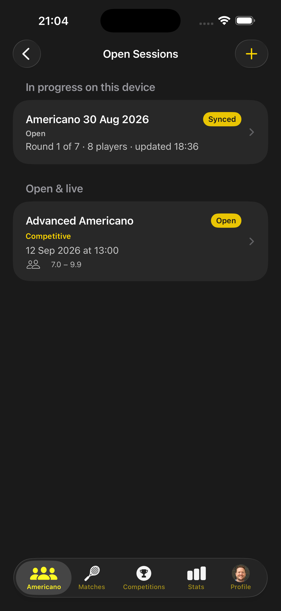
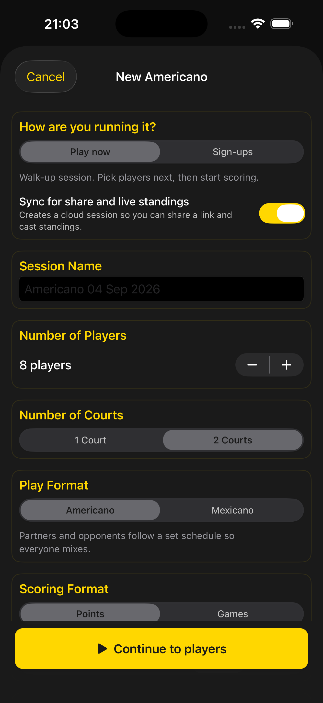
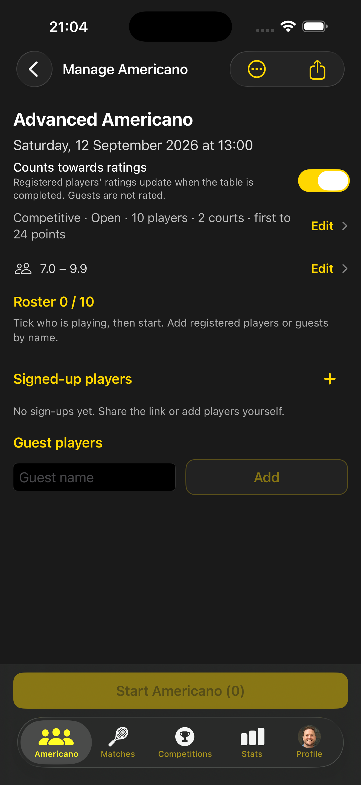
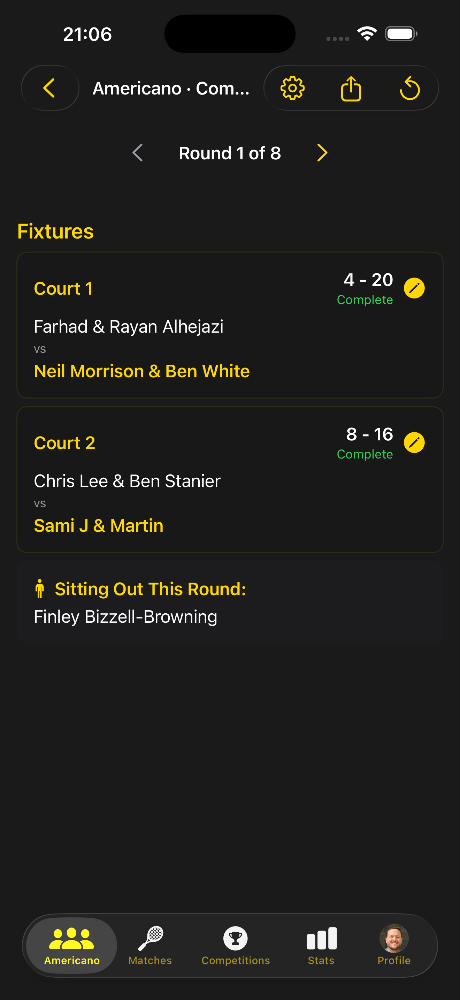
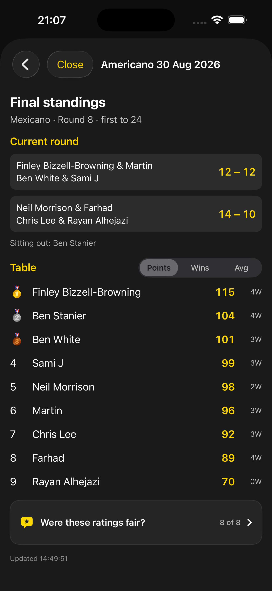

An Americano is a session of short doubles games where partners rotate and points add up on a shared table. Mexicano uses a live draw from the table so court 1 stays the top court. Padel Pals handles sign-ups, courts, the current round and sit-outs so the organiser is not keeping score on paper.
Open sessions from the Americano tab
See sessions in progress on this device and club sessions that are open or live. Each card shows format, status, time and a rating band when one is set.

Set courts, players and format
Choose Play now or Sign-ups, how many players (adjustable, not a fixed eight), one or two courts, Americano or Mexicano, and points or games scoring. Turn on sync if you want a shareable live board.

Member sign-ups and guests
Share the link or add registered players yourself. Guests are added by name and are not rated. You can still tick who is playing before you start.

Current round and sit-outs
Each round shows court pairings, scores and who is sitting out. Complete a game and the table moves on.

Standings as the session finishes
The table ranks players by points, with wins and average views. Medal marks sit on the top three. Turn ratings on or off per session — guests never change the ladder.

Share a board without an account
Turn on Sync for share and live standings when you create the session. The session share icon produces a padelpals.app link you can put on a TV or drop in the club group. Watching does not require a Padel Pals login.
See a session in the app
A short walk through open sessions, sign-ups, round fixtures and standings. Use the controls to play it.
Step-by-step stills: App Guide — Americano.
Bring Americano to your club
Download the app, select your club or add it, then invite members to join. Need help getting started? Contact us.